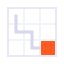
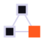
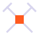
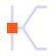
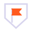

Путь робота по сетке программатора к цели. Про главное отличие игры — код.

Три робота связаны в бригаду, свой — оранжевый. Про общество и кланы.

Скрещённые кирки над блоком. Про драки за территорию и ресурсы.

Буква K, нарисованная путём программы, ядро — стартовая клетка.

Щит клана с флажком. Про захват и удержание шахты.
Корпус робота с буром, глаз — сигнал. Персонаж-иконка.
Твой код. Твой клан. Твоя шахта.Три кита игры: программатор, общество, территория.
Копают все. Побеждает клан.Про социум и войны: в одиночку не выжить.
Напиши робота. Забери недра.Про программатор как оружие.
Код решает.Коротко, для баннеров и стримов. Двусмысленно: решает задачу и решает исход.
Шахта — это территория.Про захват и войны кланов.
Кто глубже — тот сильнее.Про прогресс и соперничество.
Программируй. Копай. Захватывай.Глаголы трёх механик подряд.
Под землёй тоже есть политика.С иронией, про общество и интриги кланов.